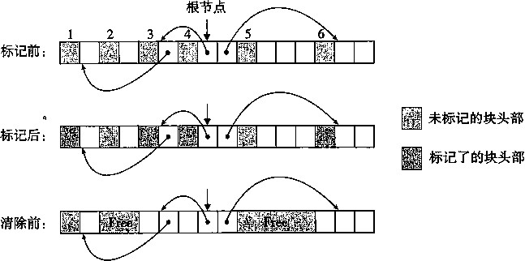
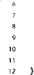

31
3 2 10
31
3 2 10
块大小
块大小
头部
头部
a/f
pred ( 祖先）
有效载荷
succ ( 后继 )
原来的有效载荷
脚部
块大小
脚部
块大小
a) 分配块 b) 空闲块
图9-48使用双向空闲链表的堆块的格式
使用双向链表而不是隐式空闲链表，使首次适配的分配时间从块总数的线性时间减少到了空 闲块数量的线性时间。不过，释放一个块的时间可以是线性的，也可能是个常数，这取决于我们 所选择的空闲链表中块的排序策略。
一种方法是用后 进先出 （LIFO)的顺序维护链表，将新释放的块放置在链表的开始处。使 用LIFO的顺序和首次适配的放置策略，分配器会最先检查最近使用过的块。在这种情况下，释 放一个块可以在常数时间内完成。如果使用了边界标记，那么合并也可以在常数时间内完成。
另一种方法是按照地 址顺序 来维护链表，其中链表中每个块的地址都小于它后继的地址。在 这种情况下，释放一个块需要线性时间的搜索来定位合适的前驱。平衡点在于，按照地址排序的 首次适配比LIFb排序的首次适配有更高的存储器利用率，接近最佳适配的利用率。
一般而言，显式链表的缺点是空闲块必须足够大，以包含所有需要的指针，以及头部和可能 的脚部。这就导致了更大的最小块大小，也潜在地提高了内部碎片的程度。
9.9.14 分离的空闲链表
就像我们已经看到的，一个使用单向空闲块链表的分配器需要与空闲块数量呈线性关系的时 间来分配块。一种流行的减少分配时间的方法，通常称为分 离存储 （segregated storage),就是维 护多个空闲链表，其中每个链表中的块有大致相等的大小。一般的思路是将所有可能的块大小分 成一些等价类，也叫做 大小类 （size class)。有很多种方式来定义大小类。例如，我们可以根据2 的幂来划分块大小：
{1}，{2}, {3,4}, {5 〜8}，…，{1025 〜2048}，{2049 〜4096}，{4097 〜~ }
或者我们可以将小的块分派到它们自己的大小类里,而将大块按照2的幂分类：
{1}, {2}, {3}，…，{1023}, {1024}, {1025 〜2048}，{2049 〜4096}，{4097 〜~ }
分配器维护着一个空闲链表数组，每个大小类一个空闲链表，按照大小的升序排列。当分配
器需要一个大小为《的块时,它就搜索相应的空闲链表。如果它不能找到合适的块与之匹配，它 就搜索下一个链表，以此类推。
有关动态存储分配的文献描述了几十种分离存储方法，主要的区别在于它们如何定义大小 类， 何时进行合并，何时向操作系统请求额外的堆存储器，是否允许分割，等等。为了使你大致 了解有哪些可能性，我们会描述两种基本的方法 ：简单分离存储 （simple segregated storage)和 分离适配 （segregatedfit)。
简单分离存储
使用简单分离存储，每个大小类的空闲链表包含大小相等的块，每个块的大小就是这个大小 类中最大元素的大小。例如，如果某个大小类定义为{17〜32},那么这个类的空闲链表全由大 小为32的块组成。
为了分配一个给定大小的块，我们检查相应的空闲链表。如果链表非空，我们简单地分配其 中第一块的全部。空闲块是不会分割以满足分配请求的。如果链表为空，分配器就向操作系统请 求一个固定大小的额外存储器片（典型地是页大小的整数倍)，将这个片分成大小相等的块，并 将这些块链接起来形成新的空闲链表。要释放一个块，分配器只要简单地将这个块插入到相应的 空闲链表的前部。
这种简单的方法有许多优点。分配和释放块都是很快的常数时间操作。而且，每个片中都是 大小相等的块，不分割，不合并，这意味着每个块只有很少的存储器开销。既然每个片只有大小 相同的块，那么一个已分配块的大小就可以从它的地址中推断出来。因为没有合并，所以已分配 块的头部就不需要一个已分配的/空闲标记。因此已分配块不需要头部，同时因为没有合并，它 们也不需要脚部。因为分配和释放操作都是在空闲链表的起始处操作，所以链表只需要是单向 的，而不用是双向的。关键点在于，在任何块中都需要的唯一字段是每个空闲块中的一个字的 SUCC指针，因此最小块大小就是一个字。
一个显著的缺点是，简单分离存储很容易造成内部和外部碎片。因为空闲块是不会被分割 的，所以可能会造成内部碎片。更糟的是，因为不会合并空闲块，所以某些引用模式会引起极多 的外部碎片（见练习题9.10)。
®练习题9.10描述一个在基于简单分离存储的分配器中会导致严重外部碎片的引用模式。
分离适配
使用这种方法，分配器维护着一个空闲链表的数组。每个空闲链表是和一个大小类相关联 的，并且被组织成某种类型的显式或隐式链表。每个链表包含潜在的大小不同的块，这些块的大 小是大小类的成员。有许多种不同的分离适配分配器。这里，我们描述了一种简单的版本。
为了分配一个块，我们必须确定请求的大小类，并且对适当的空闲链表做首次适配，査找一 个合适的块。如果我们找到了一个 ， 那么我们（可选地）分割它 ， 并将剩余的部分插入到适当的 空闲链表中。如果我们找不到合适的块，那么就搜索下一个更大的大小类的空闲链表。如此重 复，直到找到一个合适的块。如果空闲链表中没有合适的块，那么我们就向操作系统请求额外的 堆存储器，从这个新的堆存储器中分配出一个块，将剩余部分放置在适当的大小类中。要释放一 个块，我们执行合并，并将结果放置到相应的空闲链表中。
分离适配方法是一种常见的选择，C标准库中提供的GNU malloc包就是釆用的这种方法， 因为这种方法既快速，对存储器的使用也很有效率。搜索时间减少了，因为搜索被限制在堆的某 个部分，而不是整个堆。存储器利用率得到了改善，因为有一个有趣的事实：对分离空闲链表的 简单的首次适配捜索，其存储器利用率近似于对整个堆的最佳适配搜索的存储器利用率。
伙伴系统
伙伴系统 （buddy system)是分离适配的一种特例，其中每个大小类都是2的幂。基本 的思路是假设一个堆的大小为个字，我们为每个块大小f维护一个分离空闲链表，其中 0 < A < m。请求块大小向上舍入到最接近的2的幂。最开始时，只有一个大小为 2 m 个字的空 闲块。
为了分配一个大小为的块，我们找到第一个可用的、大小为方的块，其中 如果户匕那么我们就完成了。否则，我们递归地二分割这个块,直到J = 当我们进行这样
的分割时，每个剩下的半块（也叫 做伙伴 ）被放置在相应的空闲链表中。要释放一个大小为2 A 的块，我们继续合并空闲的伙伴。当我们遇到一个已分配的伙伴时，我们就停止合并。
关于伙伴系统的一个关键事实是，给定地址和块的大小，很容易计算出它的伙伴的地址。例 如，一个块大小为32字节，地址为
xxx."xOOOOO 它的伙伴的地址为 xxx."xlOOOO
换句话说，一个块的地址和它的伙伴的地址只有一位不相同。
伙伴系统分配器的主要优点是它的快速搜索和快速合并。主要缺点是要求块大小为2的幂可 能导致显著的内部碎片。因此，伙伴系统分配器不适合通用目的的工作负载。然而，对于某些特 定应用的工作负载,其中块大小预先知道是2的幂，伙伴系统分配器就很有吸引力了。
9.10 垃圾收集
在诸如C malloc包这样的显式分配器中，应用通过调用malloc和free来分配和释放堆 块。应用要负责释放所有不再需要的已分配块。
未能释放已分配的块是一种常见的编程错误。例如，考虑下面的C函数，作为处理的一部 分，它分配一块临时存储：
void garbage()
{
int *p = (int *)Malloc(15213);
4
return; /* Array p is garbage at this point */
因为程序不再需要P,所以在garbage返回前应该释放p。不幸的是,程序员忘了释放这个块。 它在程序的生命周期内都保持为已分配状态，毫无必要地占用着本来可以用来满足后面分配请求 的堆空间。
垃级收集器 （garbage collector)是一种动态存储分配器，它自动释放程序不再需要的已分配 块。这些块称 为垃圾（ garbage)(因此术语就称之为垃圾收集器)。自动回收堆存储的过程叫做 垃圾收集 （garbage collection )。 在一个支持垃圾收集的系统中，应用显式分配堆块，但是从不显 示地释放它们。在C程序的上下文中，应用调用malloc,但是从不调用free。反之，垃圾收 集器定期识别垃圾块，并相应地调用free,将这些块放回到空闲链表中。
垃圾收集可以追溯到John McCarthy在20世纪60年代早期在MIT开发的Lisp系统。它是 诸如Java、ML、Perl和Mathematica等现代语言系统的一个重要部分，而且它仍然是一个重要 而活跃的研究领域。有关文献描述了大量的垃圾收集方法，其数量令人吃惊。我们的讨论局限于 McCarthy独创的Mark&Sweep (标记&清除）算法，这个算法很有趣，因为它可以建立在已存
在的malloc包的基础之上，为C和C++程序提供垃圾收集。
9.10.1垃圾收集器的基本知识
垃圾收集器将存储器视为一张有向可达图（reachability graph),其形式如图9-49所示。该 图的节点被分成一组根节点（root node)和一组堆节点（heap node)。每个堆节点对应于堆中的 一个已分配块。有向边p — q 意味着块P中的某个位置指向块 q 中的某个位置。根节点对应于这 样一种不在堆中的位置，它们中包含指向堆中的指针。这些位置可以是寄存器、栈里的变量，或 者是虚拟存储器中读写数据区域内的全局变量。
根节点
4j i-i ： ^
图9-49垃圾收集器将存储器视为一张有向图
A G可达的 •不可g的
1¾¾麗槐（垃圾）
当存在一条从任意根节点出发并到达;7的有向路径时，我们说节点p是可达的（reachable)。 在任何时刻，不可达节点对应于垃圾，是不能被应用再次使用的。垃圾收集器的角色是维护可达 图的某种表示，并通过释放不可达节点并将它们返回给空闲链表，来定期地回收它们。
像ML和Java这样的语言的垃圾收集器，对应用如何创建和使用指针有很严格的控制， 能够维护可达图的一种精确的表示，因此也就能够回收所有垃圾。然而,诸如C和C++这 样的语言的收集器通常不能维持可达图的精确表示。这样的收集器也叫做保守的垃圾收集器 (conservative garbage collector) 0 从某种意义上来说它们是保守的，即每个可达块都被正确地标 记为可达了，而一些不可达节点却可能被错误地标记为可达。
收集器可以按需提供它们的服务，或者它们可以作为一个和应用并行的独立线程，不断地更 新可达图和回收垃圾。例如，考虑如何将一个C程序的保守的收集器加入到已存在的malloc 包中，如图9-50所示。
动态存储分配器
图9-50将一个保守的垃圾收集器加入到C的malloc包中
无论何时需要堆空间，应用都会用通常的方式调用malloc。如果malloc找不到一个合适 的空闲块，那么它就调用垃圾收集器，希望能够回收一些垃圾到空闲链表。收集器识别出垃圾 块，并通过调用free函数将它们返回给堆。关键的思想是收集器代替应用去调用free。当对 收集器的调用返回时，malloc重试，试图发现一个合适的空闲块。如果还是失败了，那么它就 会向操作系统要求额外的存储器。最后，malloc返回一个指向请求块的指针（如果成功）或者 返回一个空指针（如果不成功)。
Mark&Sweep 垃圾收集器
Mark&Sweep垃圾收集器 由标记 （mark) 阶段和清除 （sweep) 阶段 组成，标记阶段标记出 根节点的所有可达的和已分配的后继，而后面的清除阶段释放每个未被标记的已分配块。典型 地,块头部中空闲的低位中的一位用来表示这个块是否被标记了。
我们对Mark&Sweep的描述将假设使用下列函数，其中ptr定义为typedef void *ptr G
•ptr isPtr (ptr p):如果p指向一个已分配块中的某个字，那么就返回一个指向这个 块的起始位置的指针b。否则返回NULL。
int blockMarked (ptr b):如果已经标记了块b,那么就返回true。
•int blockAllocated (ptr b):如果块b是已分配的，那么就返回true。
void markBlock (ptr b)：标记块 b。
•int length (ptr b):返回块b的以字为单位的长度（不包括头部)。
void unmarkBlock (ptr b):将块b的状态由已标记的改为未标记的。
•ptr nextBlock (ptr b):返回堆中块b的后继。
标记阶段为每个根节点调用一次图9-51a所示的mark函数。如果 P 不指向一个已分配并且 未标记的堆块 ， mark函数就立即返回。否则，它就标记这个块，并对块中的每个字递归地调用 它自己。每次对mark函数的调用都标记某个根节点的所有未标记并且可达的后继节点。在标记 阶段的末尾，任何未标记的已分配块都被认定为是不可达的，是垃圾，可以在清除阶段回收。
清除阶段是对如图9-51b所示的sweep函数的一次调用。sweep函数在堆中每个块上反复 循环，释放它所遇到的所有未标记的已分配块（也就是垃圾)。-
void mark(ptr p) { |
void sweep(ptr b, ptr end) { |
|
if ((b = isPtr(p)) == NULL) |
while (b < end) { |
|
return; |
if (blockMarked(b)) |
|
if (blockMarked(b)) |
unmarkBlock(b); |
|
return; |
else if (blockAllocated(b)) |
|
markBlock(b); |
free(b); |
|
len = length(b); |
b = nextBlock(b); |
|
for (i=0; i < len; i++) |
> |
|
mark(b[i]); |
return; |
|
return; > |
> |
a) mark 函数 b) sweep 函数
图9-51 mark和sweep函数的伪代码
图9-52展示了一个小堆的Mark&Sweep的图形化解释。块边界用粗线条表示。每个方块对 应于存储器中的一 个字。 每个块有一个字的头部，要么是标记了的，要么是未标记的。
初始情况下，图9-52中的堆由六个已分配块组成，其中每个块都是未分配的。第3块包 含一个指向第1块的指针。第4块包含指向第3块和第6块的指针。根指向第4块。在标记阶 段之后，第1块、第3块、第4块和第6块被做了标记，因为它们是从根节点可达的。第2块 和第5块是未标记的，因为它们是不可达的。在清除阶段之后，这两个不可达块被回收到空闲 链表。
C 程序的保守 Mark&Sweep
Mark&Sweep对C程序的垃圾收集是一种合适的方法，因为它可以就地工作，而不需要移动 任何块。然而，C语言为isPtr函数的实现造成了一些有趣的挑战。

图9-52标记和清除示例。注意，这个示例中的箭头表示存储器引用，而不是空闲链表指针
第一，C不会用任何类型信息来标记存储器位置。因此，对isPtr没有一种明显的方式来 判断它的输入参数P是不是一个指针。第二，即使我们知道P是一个指针，对isPtr也没有明 显的方式来判断P是否指向一个已分配块的有效载荷中的某个位置。
'对后一问题的解决方法是将已分配块集合维护成一棵平衡二叉树，这棵树保持着这样一个属 性：左子树中的所有块都放在较小的地址处，而右子树中的所有块都放在较大的地址处。如图 9-53所示，这就要求每个已分配块的头部里有两个附加字段（left和right)。每个字段指向 某个已分配块的头部。
已分配块头部
图9-53 —棵已分配块的平衡树中的左右指针
isPtr (ptr p)函数用树来执行对已分配块的二分查找。在每一步中，它依赖于块头部中 的大小字段来判断P是否落在这个块的范围之内。
平衡树方法保证会标记所有从根节点可达的节点，从这个意义上来说它是正确的。这是一 个必要的保证，因为应用程序的用户当然不会喜欢把他们的已分配块过早地返回给空闲链表。 然而，这种方法从某种意义上而言又是保守的，因为它可能不正确地标记实际上不可达的块, 因此它可能不会释放某些垃圾。虽然这并不影响应用程序的正确性，但是这可能导致不必要的 外部碎片。
C程序的Mark&Sweep收集器必须是保守的，其根本原因是C语言不会甩类型信息来标记 存储器位置。因此，像int或者float这样的标量可以伪装成指针。例如，假设某个可达的已 分配块在它的有效载荷中包含一个int,其值碰巧对应于某个其他已分配块b的有效载荷中的 一个地址。对收集器而言，是没有办法推断出这个数据实际上是int而不是指针的。因此，分 配器必须保守地将块b标记为可达，尽管事实上它可能是不是可达的。
9.11 C 程序中常见的与存储器有关的错误
对c程序员来说，管理和使用虚拟存储器可能是个困难的、容易出错的任务。与存储器有 关的错误属于那些最令人惊恐的错误，因为它们在时间和空间上，经常是在距错误源一段距离 之后才表现出来。将错误的数据写到错误的位置，你的程序可能在最终失败之前运行了好几个小 时，且使程序中止的位置距离错误的位置已经很远了。我们用一些常见的与存储器有关的错误的 讨论，来结束对虚拟存储器的讨论。
9.11.1 间接引用坏指针
正如我们在9.7.2节中学到的，在进程的虚拟地址空间中有较大的洞，没有映射到任何有 意义的数据。如果我们试图间接引用一个指向这些洞的指针，那么操作系统’就会以段异常中止 我们的程序。而且，虚拟存储器的某些区域是只读的。试图写这些区域将会以保护异常中止这 个程序。
间接引用坏指针的一个常见示例是经典的scanf错课。假设我们想要使用scanf从 stdin读一个整数到一个变量。正确的方法是传递给scanf —个格式串和变量的地址：
scanf("%d", &val)
然而，对于C程序初学者而言（对有经验者也是如此)，很容易传递val的内容，而不是它的地址：
scanf ("7 0 d", val)
在这种情况下，scanf将把val的内容解释为一个地址,并试图将一个字写到这个位置。在最 好的情况下，程序立即以异常中止。在最糟糕的情况下，val的内容对应于虚拟存储器的某个合 法的读/写区域，于是我们就覆盖了存储器，这通常会在相当长的一段时间以后造成灾难性的、 令人困惑的后果。
9.11.2 读未初始化的存储器
虽然bss存储器位置（诸如未初始化的全局C变量）总是被加载器初始化为零，但是对于堆 存储器却并不是这样的。一个常见的错误就是假设堆存储器被初始化为零：
/* Return y = Ax */
int *matvec(int **A, int *x, int n)
{
int i, j;
5
int *y = (int *) Malloc(n * sizeof (int)) ;
7
for (i = 0; i < n; i++)
for (j = 0; j < n; j++)
y[i] += ACi] [j] * x[j];
return y;
在这个示例中，程序员不正确地假设向量y被初始化为零。正确的实现方式是显式地将y[i]设 置为零，或者使用calloc。
9.11.3 允许栈缓冲区溢出
正如我们在3.12节中看到的，如果一个程序不检查输入串的大小就写入栈中的目标缓冲 区， 那 么这个程序就会有缓 冲区溢出错误 （buffer overflow bug)。例如， 下 面的函数就有缓冲区 溢出错误，因为gets函数拷贝一个任意长度的串到缓冲区。为了纠正这个错误，我们必须使用 fgets函数，这个函数限制了输入串的大小：
void bufoverflow()
{
char buf[64];
gets(buf); /* Here is the stack buffer overflow bug return;
假设指针和它们指向的对象是相同大小的
一种常见的错误是假设指向对象的指针和它们所指向的对象是相同大小的：
/* Create an nxm a_rra.y +/
int **makeArrayl(int n, int m)
i
int i;
int **A - (int **)Malloc(n * sizeof(int));
6
for (i = 0; i < n; i++)
A[i] = (int *)Malloc(m * sizeof(int));
return A ;
这里的目的是创建一个由w个指针组成的数组，每个指针都指向一个包含m个int的数组。然 而，因为程序员在第5行将sizeof (int *)写成了 sizeof (int),代码实际上创建的是一个 int的数组。
这段代码只有在int和指向int的指针大小相同的机器上运行良好。但是，如果我们在像 Core i7这样的机器上运行这段代码 ， 其中指针大于int,那么第7行和第8行的循环将写到超 出A数组结尾的地方。因为这些字中的一个很可能是已分配块的边界标记脚部 ， 所以我们可能 不会发现这个错误，直到我们在这个程序的后面很久释放这个块时，此时，分配器中的合并代码 会戏剧性地失败，而没有任何明显的原因。这是“在远处起作用”（action at distance)的一个隐 密示例，这类“在远处起作用”是与存储器有关的编程错误的典型情况。
9.11.5造成错位错误
错位（Off-by-one)错误是另一种很常见的覆盖错误来源：
/* Create an nxm array */
int **makeArray2(int n, int m)
H {
int i;
int **A = (int **)Malloc(n * sizeof (int *));
6
for (i = 0; i <= n; i++)
A[i] = (int *) Malloc(m * sizeof(int)) ;
return A;
这是前面一节中的程序的另一个版本。这里我们在第5行创建了一个/7个元素的指针数组，但是 随后在第7行和第8行试图初始化这个数组的 n + 1个元素，在这个过程中覆盖了 A数组后面的 某个存储器。
9.11.6引用指针，而不是它所指向的对象
如果不太注意C操作符的优先级和结合性，我们就会错误地操作指针，而不是指针所指向 的对象。比如，考虑下面的函数，其目的是删除一个有*size项的二叉堆里的第一项，然后对 剩下的*size-l项重新建堆：
] int *binheapDelete(int **binheap, int *size) 2 {
int *packet = binheap [0];
A
binheap [0] = binheap[*size - 1];
*size --; /* This should be Osize)-- */
heapify(binheap, *size, 0);
return (packet);
在第 6 行，目的是减少 size 指针指向的整数的值。然而，因为一元运算符 -- 和*的优先级 相同，从右向左结合 ， 所以第 6 行中的代码实际减少的是指针自己的值，而不是它所指向的 整数的值。如果幸运地话 ， 程序会立即失败；但是更有可能发生的是，当程序在执行过程后 很久才 产生出一个不正确的结果时 ， 我们只有一头的雾水。这里的原则是当你对优先级和结 合性有疑问的时候，就应该使用括号。比如，在第 6 行，我们可以使用表达式，清晰地表明 我们的意图。
误解指针运算
另一种常见的错误是忘记了指针的算术操作是以它们指向的对象的大小为单位来进行的，而 这种大小单位并不一定是字节。例如，下面函数的目的是扫描一个 int 的数组，并返回一个指 针，指向 val 的首次出现：
int *search(int *p, int val)
{ •
while (*p && *p != val)
p += sizeof(int); /* Should be p 十 + */
return p;
> '
然而，因为每次循环时，第 4 行都把指针加了 4 ( 一个整数的字节数)，函数就不正确地扫描数 组中每 4 个整数。
引用不存在的变量
没有太多经验的 C 程序员不理解栈的规则，有时会引用不再合法的本地变量，如下列所示：
int *stackref ()
{
int val;
4
return &val;
>
这个函数返回一个指针（如 P), 指向栈里的一个局部变量，然后弹出它的找帧。尽管 P 仍然指 向一个合法的存储器地址，但是它已经不再指向一个合法的变量了。当以后在程序中调用其他函 数时，存储器将重用它们的栈帧。再后来，如果程序分配某个值给 *P ,那么它可能实际上正在 修改另一个函数的栈帧中的一个条目，从而潜在地带来灾难性的、令人困惑的后果。
9.11.9 引用空闲堆块中的数据
一个相似的错误是引用已经被释放了的堆块中的数据。例如，考虑下面的示例，这个示例在 第 6 行分配了一个整数数组 x, 在第 10 行中先释放了块 x, 然后在第 14 行中又引用了它：
int *heapref(int n, int m)
{
int i;
int *x, *y;
5
x = (int *)Malloc(n * sizeof(int));
•
/* ... */ /* Other calls to malloc and free go here */
9
free(x);
1
y = (int *)Malloc(m * sizeof(int));
for (i = 0; i < m; i++)
-i y [i] = x [i] ++; A Oops! x [i] is a word in a free block */
取决于在第6行和第10行发生的malloc和free的调用模式，当程序在第14行引用x [幻 时，数组x可能是某个其他已分配堆块的一部分了，因此其内容被重写了。和其他许多与存储 器有关的错误一样，这个错误只会在程序执行的后面，当我们注意到y中的值被破坏了时才会 显现出来。
9.11.10 引起存储器泄漏
存储器泄漏是缓慢、隐性的杀手，当程序员不小心忘记释放已分配块，而在堆里创建了垃圾 时，会发生这种问题。例如，下面的函数分配了一个堆块x,然后不释放它就返回：
void leak(int n)
{
i int *x = (int *)Malloc(n * sizeof(int));
4
return ; /* x is garbage at this point 氺 /
}
如果经常调用leak,那么渐渐地，堆里就会充满了垃圾，在最糟糕的情况下，会占用整个 虚拟地址空间。对于像守护进程和服务器这样的程序来说，存储器泄漏是特别严重的，根据定义 这些程序是不会终止的。
9.12 小结
虚拟存储器是对主存的一个抽象。支持虚拟存储器的处理器通过使用一种叫做虚拟寻址的间 接形式来引用主存。处理器产生一个虚拟地址，在被发送到主存之前，这个地址被翻译成一个物 理地址。从虚拟地址空间到物理地址空间的地址翻译要求硬件和软件紧密合作。专门的硬件通过 使用页表来翻译虚拟地址，而页表的内容是由操作系统提供的。
虚拟存储器提供三个重要的功能。第一，它在主存中自动缓存最近使用的存放磁盘上的虚拟 地址空间的内容。虚拟存储器缓存中的块叫做页。对磁盘上页的引用会触发缺页，缺页将控制转 移到操作系统中的一个缺页处理程序。缺页处理程序将页面从磁盘拷贝到主存缓存，如果必要, 将写回被驱逐的页。第二，虚拟存储器简化了存储器管理，进而又简化了链接、在进程间共享数 据、进程的存储器分配以及程序加载。最后，虚拟存储器通过在每条页表条目中加入保护位，从
而了简化了存储器保护。
地址翻译的过程必须和系统中所有的硬件缓存的操作集成在一起。大多数页表条目位于L1 高速缓存中，但是一个称为TLB的页表条目的片上高速缓存，通常会消除访问在L1上的页表条 目的开销。
现代系统通过将虚拟存储器片和磁盘上的文件片关联起来，以初始化虚拟存储器片，这个过 程称为存储器映射。存储器映射为共享数据、创建新的进程以及加载程序提供了一种高效的机 制。应用可以使用mmap函数来手工地创建和删除虚拟地址空间的区域。然而，大多数程序依赖 于动态存储器分配器 ， 例如malloc,它管理虚拟地址空间区域内一个称为堆的 区域。 动态存储 器分配器是一个感觉像系统级程序的应用级程序，它直接操作存储器，而无需类型系统的很多帮 助。分配器有两种类型。显式分配器要求应用显式地释放它们的存储器块。隐式分配器（垃圾收 集器）自动释放任何未使用的和不可达的块。
对于C程序员来说，管理和使用虚拟存储器是一件困难和容易出错的任务。常见的错误示 例包括：间接引用坏指针，读取未初始化的存储器，允许栈缓冲区溢出，假设指针和它们指向的 对象大小相同，引用指针而木是它所指向的对象，误解指针运算，引用不存在的变量，以及引起 存储器泄漏。
参考文献说明
Kilbum和他的同事们发表了第一篇关于虚拟存储器的描述[60]。体系结构教科书包括关于 5更件在虚拟存储器中的角色的更多细节[49]。操作系统教科书包含关于操作系统角色的更多信息 [98, 104, 112]。Bovet和Cesati[ll]给出了 Linux虚拟存储器系统的详细描述。Intel公司提供了 IA处理器上32位和64位地址翻译的详细文档[30]。
Knuth在1968年编写了有关存储分配的经典之作[61]。从那以后，在这个领域就有了大量 的文献。Wilson、Johnstone, Neely和Boles写了一篇关于显式分配器的漂亮综述和性能评价 的文章[117]。本书中关于各种分配器策略的吞吐率和利用率的一般评价就引自于他们的调查。 Jones和Lins提供了关于垃圾收集的全面综述[54]。Kemighan和Ritchie[58]展示了一个简单分 配器的完整代码，这个简单的分配器是基于显式空闲链表的，每个空闲块中都有一个块大小和后 继指针。这段代码使用联合（union)来消除大量的复杂指针运算 ， 这是很有趣的 ， 但是代价是 释放操作是线性时间（而不是常数时间)。
家庭作业
*9.11在下面的一系列问题中，你要展示9.6.4节中的示例存储器系统如何将虚拟地址翻译成物理地址，以 及如何访问缓存。对于给定的虚拟地址 ， 请指出访问的TLB条目、物理地址，以及返回的缓存字节 值。请指明是否TLB不命中，是否发生了缺页，是否发生了缓存不命中。如果有缓存不命中，对于 “返回的缓存字节”用“一”来表示。如果有缺页，对于“PPN”用“一”来表示 ， 而C部分和D部 分就空着。
虚拟地址：0x027c A.虚拟地址格式
12 11 10 9 8 7 6 5 4 3 2 1 0
B. 地址翻译
参数 |
值 |
VPN |
|
TLB索引 |
|
TLB标记 |
|
TLB命中？（是/否） |
|
缺页？（是/否） |
|
PPN |
C.物理地址格式
10 98765432 1 0
D. 物理地址引用
参数 |
值 |
字节偏移 |
|
缓存索引 |
|
缓存标记 |
S |
缓存命中？（是/否） |
|
返回的缓存字节 |
9.12对于下面的地址，重复习题9.11:
虚拟地址：0x03a9
虚拟地址格式
12 11 10 9 8 7 6 5 4 3 2 1 0
B. 地址翻译
参数 |
值 |
VPN |
|
TLB索引 |
|
TLB标记 |
|
TLB命中？（是/否） |
|
缺页？（是/否） |
|
PPN |
C.物理地址格式
10 9876543210
D.物理地址引用
参数 |
值 |
字节偏移 |
|
缓存索引 |
|
缓存标记 |
|
缓存命中？（是/否） |
|
返回的缓存字节 |
*9.13 对于下面的地址，重复习题9.11:
虚拟地址：0x0040
虚拟地址格式
13 12 11 10 9 8 7 6 5 4 3 2 1 0
B•地址翻译
参数 |
值 |
VPN |
|
TLB索引 |
|
TLB标记 |
|
TLB命中？（是/否） |
|
缺页？（是/否） |
|
PPN |
物理地址格式
11 10 9876543210
D.物理地址引用
参数 |
值 |
字节偏移 |
|
缓存索引 |
|
缓存标记 |
|
缓存命中？（是/杏） |
|
返回的缓存字节 |
请求 |
块大小（十进制字节） |
块头部（十六进制） |
malloc(3) |
||
malloc(11) |
||
malloc(20) |
||
malloc(21) |
*9.16确定下面对齐要求和块格式的每个组合的最小块大小。假设：显式空闲链表、每个空闲块中有四字 节的pred和succ指针、不允许有效载荷的大小为零，并且头部和脚部存放在一个四字节的字中。
对齐要求 |
已分配块 |
空闲块 |
最小块大小（字节） |
单字 |
头部和脚部 |
头部和脚部 |
|
单字 |
头部，但是没有脚部 |
头部和脚部 |
|
双字 |
头部和脚部 |
头部和脚部 |
|
双字 |
头部，但是没有脚部 |
头部和脚部 |
79.17开发9.9.12节中的分配器的一个版本，执行下一次适配搜索，而不是首次适配搜索。
V9.18 9.9.12节中的分配器要求每个块既有头部也有脚部，以实现常数时间的合并。修改分配器，使得空 闲块需要头部和脚部，而巳分配块只需要头部。
*9.19下面给出了三组关于存储器管理和垃圾收集的陈述。在每一组中，只有一句陈述是正确的。你的任 务就是判断哪一句是正确的。
a)在一个伙伴系统中，最高可达50%的空间可以因为内部碎片而被浪费了。
首次适配存储器分配算法比最佳适配算法要慢一些（平均而言）。
只有当空闲链表按照存储器地址递增排序时，使用边界标记来回收才会快速。
伙伴系统只会有内部碎片，而不会有外部碎片。 ’
a)在按照块大小递减顺序排序的空闲链表上，使用首次适配算法会导致分配性能很低，但是可
以避免外部碎片。 .
对于最佳适配方法，空闲块链表应该按照存储器地址的递增顺序排序。
最佳适配方法选择与请求段匹配的最大的空闲块。
在按照块大小递增的顺序排序的空闲链表上，使用首次适配算法与使用最佳适配算法等价。
Mark&Sweep垃圾收集器在下列哪种情况下叫做保守的 ：
它们只有在存储器请求不能被满足时才合并被释放的存储器。
它们把一切看起来像指针的东西都当做指针。
它们只在存储器用尽时，才执行垃圾收集。
它们不释放形成循环链表的存储器块。
**9.20编写你自己的malloc和free版本，将它的运行时间和空间利用率与标准C库提供的malloc版 本进行比较。
练习题答案
练习题 9.1这道题让你对不同地址空间的大小有了些了解。曾几何时，一个32位地址空间看上去似乎是 无法想象的大。但是，现在有些数据库和科学应用需要更大的地址空间，而且你会发现这种趋势会继续。 在你的有生之年，你可能会抱怨你的个人电脑上那狭促的64位地址空间！
#虚拟地址位⑷ |
#虚拟地址 (N) |
最大可能的虚拟地址 |
8 |
2 8 = 256 |
2 8 - 1 =255 |
16 |
2 16 = 64K |
2 16 - 1=64K- 1 |
32 |
2 32 = 4G |
2 n -l=4G-l |
48 |
2 48 = 256T |
2^ = 2561-1 |
64 |
2 m =16 384P |
2 64 -l= 16 384P-l |
练习题 9.2因为每个虚拟页面是P = 2〃字节，所以在系统中总共有272〃 = 2^^个可能的页面，其中每个都 需要一个页表条目（PTE)。
n |
P = 2 P |
#PTE |
16 |
4K |
16 |
16 |
8K |
8 |
32 |
4K |
1M |
32 |
8K |
512K |
练习题 9.3为了完全掌握地址翻译，你需要很好地理解这类问题。下面是如何解决第一个子问题：我们有 « = 32个虚拟地址位和w = 24个物理地址位。页面大小是P=1KB,这意味着对于VPO和PPO,我们都需 要log 2 (lK) = 10位。（回想一下，VPO和PPO是相同的。）剩下的地址位分别是VPN和PPN。
P |
#VPN 位 |
mo位 |
#PPN 位 |
#PPO 位 |
1KB |
22 |
10 |
14 |
10 |
2KB |
21 |
ii |
13 |
11 |
4KB |
20 |
12 |
12 |
12 |
8KB |
19 |
13 |
11 |
13 |
练习题 9.4做一些这样的手工模拟，能很好地巩固你对地址翻译的理解。你会发现写出地址中的所有的 位，然后在不同的位字段上画出方框，例如VPN、TLBI等，这会很有帮助。在这个特殊的练习中，没有任 何类型的不命中：TLB有一份PTE的拷负，而缓存有一份所请求数据字的拷贝。对于命中和不命中的一些 不同的组合，请参见习题9.11、9.12和9.13。
00 0011 1101 0111
B.
参数 |
值 |
VPN |
Oxf |
TLB索引 |
0x3 |
TLB标记 |
0x3 |
TLB命中？（是/否） |
是 |
缺页？（是/否） |
否 |
PPN |
Oxd |
D.
. 参数 |
值 |
CO |
0x3 |
CI |
0x5 |
CT |
Oxd |
高速缓存命中？（是/否） |
是 |
'高速缓存字节返回 |
Oxld |
练习题 9.5解决这个题目将帮助你很好地理解存储器映射。请自己独立完成这道题。我们没有讨论 open、fstat或者write函数，所以你需要阅读它们的帮助页来看看它们是如何工作的。
code/vm/mmapcopy. c
#include "csapp.h"
/ 9
mmapcopy ~ uses mmap to copy file fd to stdout */
void mmapcopy(int fd, int size)
{
char *bufp; /* Pointer to memory mapped VM area +/
bufp = Mmap(NULL, size, PROT_READ, MAP.PRIVATE, fd, 0);
Write(1, bufp, size);
return;
/* mma.pc;opy driver 木 /
int main(int argc, char 10 argv)
struct stat stat; int fd;
Check for required command line argument */ i< (argc != 2) {
printf("usage: %s <filename>\n", argv[0]); exit(0);
}
/* Copy the input; argument to stdout */
fd = Open(argv[l], CLRDONLY, 0);
fstat(fd, festat);
mmapcopy(fd, stat.st_size);
exit(0);
请求 |
块大小（十进制字节） |
块头部（十六进制） |
malloc(1) |
8 |
0x9 |
malloc(5) |
16 |
0x11 |
malloc(12) |
16 |
0x11 |
malloc(13) |
24 |
0x19 |
练习题9.7 最小块大小对内部碎片有显著的影响。因此，理解和不同分配器设计和对齐要求相关联的最小 块大小是很好的。很有技巧的一部分是，要意识到相同的块可 以在不 同时刻被分配或者被释放。因此，最 小块大小就是最小巳分配块大小和最小空闲块大小两者的最大值。例如，在最后一个子问题中，最小的巳 分配块大小是一个4字节头部和一个1字节有效载荷，舍入到8字节。而最小空闲块的大小是一个4字节 的头部和一个4字节的脚部，加起来是8字节，巳经是8的倍数，就不需要再舍入了。 所以， 这个分配器 的最小块大小就是8字节。
对齐要求 |
已分配玦 |
空闲块 |
最小块大小（字节） |
单字 |
头部和脚部 |
头部和脚部 |
12 |
单字 |
头部，但是没有脚部 |
头部和脚部 |
8 |
双字 |
头部和脚部 |
头部和脚部 |
16 |
双字 |
头部，但是没有脚部 |
头部和脚部 |
8 |
练习题 9.8 这里没有特别的技巧。但是解答此题要求你理解简单的隐式链表分配器的剩余部分是如何工作 的，是如何操作和遍历块的。
： code/vm/malloc/mm. c
static void *find_fit (size_t asize)
{
卜 First fit search */ void *bp;

for (bp = heap_listp; GET_SIZE(HDRP(bp)) > 0; bp = NEXT_BLKP(bp)) { if (!GET_ALLOC(HDRP(bp)) && (asize <= GET_SIZE(HDRP(bp)))) { return bp;
>
>
return NULL ;卜 No fit */
PUT(FTRP(bp), PACK(asize， 1)); bp = NEXT_BLKP(bp);
o
0)); 0));
PUT(HDRP(bp), PACK(csize-asize, PUT(FTRP(bp), PACK(csize-asize,
}
else {
PUT(HDRP(bp), PACK(csize, 1)); PUT(FTRP(bp), PACK(csize, 1));
}
code/vm/malloc/mm. c
练习题9.10这里有一个会引起外部碎片的模式：应用对第一个大小类做大量的分配和释放请求，然后对 第二个大小类做大量的分配和释放请求，接下来是对第三个大小类做大量的分配和释放请求，以此类推。 对于每个大小类，分配器都创建了许多不会被回收的存储器，因为分配器不会合并，也因为应用不会再向 这个大小类再次请求块了。
I 第三部分 I
Computer Systems ： A Programmer’s Perspective, 2E |
程序间的交互和通信
我们学习计算机系统到现在，一直假设程序是独立运行的，只包含最 小限度的输入和输出。然而，在现实世界里，应用程序利用操作系统提供 的服务来与I/O设备及其他程序通信。
本书的这一部分将使你了解Unix操作系统提供的基本I/O服务，以及 如何用这些服务来构造应用程序，例如Web客户端和服务器，它们是通过 Internet彼此通信的。你将学习编写诸如Web服务器这样的可以同时为多个 客户端提供服务的并发程序。编写并发应用程序还能使程序在现代多核处 理器上执行得更快。当你学完了这个部分，你将逐渐变成一个很牛的程序 员，对计算机系统以及它们对程序的影响有很成熟的理解。
I 第 10 章 I
| Computer Systems ： A Programmer' s Perspective, 2E
系统级 i/o
输入/输出（I/O)是在主存和外部设备（如磁盘驱动器、终端和网络）之间拷贝数据的过 程。.输人操作是从I/O设备拷贝数据到主存，而输出操作是从主存拷贝数据到I/O设备。
所有语言的运行时系统都提供执行I/O的较高级别的工具。例如，ANSI C提供标准I/O库， 包含像 printf 和 scanf 这样执行带缓冲区的I/O函数。 C~H •语言用它的重载操作符《(输入) 和》(输出）提供了类似的功能。在Unix系统中 ， 是通过使用由内核提供的系统级Unix I/O函 数来实现这些较高级别的I/O函数的。大多数时候，高级别I/O函数工作良好 ， 没有必要直接使 用Unix I/O。那么为什么还要麻烦地学习Unix I/O呢？
了解 Unixl/O 将帮助你理解其他的系铳概念。 I/O是系统操作不可或缺的一部分，因此， 我们经常遇到I/O和其他系统概念之间的循环依赖。例如，I/O在进程的创建和执行中扮演 着关键的角色。反过来，进程创建又在不同进程间的文件共享中扮演着关键角色。因此, 要真正理解 I/O, 你必须理解进程，反之亦然。在对存储器层次结构、链接和加载、进程 以及虚拟存储器的讨论中，我们已经接触了 I/O的某些方面。既然你对这些概念有了比较 好的理解，我们就能闭合这个循环，更加深入地研究i/o。
•有时你嗆了使用 Unix I/O 以外别无选择。 在某些重要的情况下，使用高级I/O函数不太可 能，或者不太合适。例如，标准I/O库没有提供读取文件元数据的方式，如文件大小或文 件创建 时间。 另外，I/O库还存在一些向题，使得用它来进行两络编程非常冒险。
这一章介绍Unix I/O和标准I/O的一般概念，并且向你展示在C程序中如何可靠地使用它 们。除了作为一般性的介绍之外，这一章还为我们随后学习网络编程和并发性奠定坚实的基础。
10.1 Unix I/O
一个Unix文件就是一个 m 个字节的序列：
方 o ，丑 1 ，…， B k ， …， B m -i
所有的I/O设备，如网络、磁盘和终端，都被模型化为文件，而所有的输入和输出都被当做对相应 文件的读和写来执行。这种将设备优雅地映射为文件的方式，允许Unix内核引出一个简单、低级 的应用接口，称为Unix I/O,这使得所有的输入和输出都能以一种统一且一致的方式来执行： • 打开文件。 一个应用程序通过要求内核打开相应的文件，来宣告它想要访问一个I/O设备。 内核返回一个小的非负整数， 叫做描 述符，它在后续对此文件的所有操作中标识这个文 件。内核记录有关这个打开文件的所有信息。应用程序只需记住这个描述符。
Unix外壳创建的每个进程幵始时都有三个打开的文件：标准输入（描述符为0)、标准 输出（描述符为 1) 和标准错误（描述符为 2) 。头文件 <unistd.h> 定义了常量 STDIN_ FILENO 、 STD0UT—FILEN0 和 STDERR_FILENO, 它们可用来代替显式的描述符值。
• 改变当前的文件位置。 对于每个打开的 件 •，内核保持着 一个文件位置 h 初始为 0 。 这个 文件位置是从文件开头起始的字节偏移量。应用程序能够通过执行seek操作，显式地设置 文件的当前位置为h
• 读写文件。一个读操作就是从文件拷贝《 >0 个字节到存储器，从当前文件位置 A: 开始， 然后将 & 增加到 &+« 。给定一个大小为 m 字节的文件，当 A: > m 时执行读操作会触发一 个称为 end-of-file (EOF )的条件 ， 应用程序能检测到这个条件。在文件结尾处并没有明确
的“EOF符号”。
类似地，写操作就是从存储器拷贝《>0个字节到一个文件，从当前文件位置&开始， 然后更新h
•关闭文件。当应用完成了对文件的访问之后，它就通知内核关闭这个文件。作为响应，内 核释放文件打开时创建的数据结构，并将这个描述符恢复到可用的描述符池中。无论一个 进程因为何种原因终止时，内核都会关闭所有打开的文件并释放它们的存储器资源。
10.2 打开和关闭文件
进程是通过调用open函数来打开一个已存在的文件或者创建一个新文件的：
#include <sys/types.h>
#include <sys/stat .li>
#include <fcntl.h>
int open(char ^filename, int flags, mode_t mode);
返回：若成功则为新文件描述符，若出错为 —1 。
open函数将filename转换为一个文件描述符，并且返回描述符数字。返回的描述符总是 在进程中当前没有打开的最小描述符。flags参数指明了进程打算如何访问这个文件：
0_RD0NLY :只读。
•0_WR0NLY:只写。
O^RDWR ：可读可写。
例如，下面的代码说明如何以读的方式打开一个已存在的文件：
fd = OpenC'foo.txt", CLRDONLY, 0);
flags参数也可以是一个或者更多位掩码的或，为写提供给一些额外的指示：
•0_CREAT:如果文件不存在，就创建它的一个 截新的 （truncated)(空）文件。
0—TRUNC ：如果文件已经存在，就截断它。
0_APPEND ：在每次写操作前，设置文件位置到文件的结尾处。
例如，下面的代码说明的是如何打开一个已存在文件，并在后面添加一些数据：
fd = OpenC'foo.txt", 0_WR0NLYIO.APPEND , 0);
mode参数指定了新文件的访问权限位。这些位的符号名字如图10-1所示。作为上下文 的一部分，每个进程都有一个umask,它是通过调用umask函数来设置的。当进程通过带 某个mode参数的open函数调用来创建一个新文件时，文件的访问权限位被设置为mode & 〜umask。例如，假设我们给定下面的mode和umask默认值：
#define DEF.M0DE S.IRUSRIS.IWUSRIS.IEGRPIS.IWGRPIS_IR0TH|S_IW0TH #define DEF.UMASK S_IWGRPIS 胃 IWOTH
接下来 ， 下面的伐码片段创建一个新文件，文件的拥有者有读写权限，而所有其他的用户都有读 权限：
umask(DEF.UMASK);
fd = OpenC'foo.txt", 0_CREATIO.TRUNGI0_WR0NLY , DEF_M0DE);
掩码 |
描述 |
SJRUSR |
使用者（拥有者）能够读这个文件 |
SJWUSR |
使用者（拥有者）能够写这个文件 |
S_IXUSR |
使用者（拥有者）能够执行这个文件 |
SJRGRP |
拥有者所在组的成员能够读这个文件 |
S_IWGRP |
拥有者所在组的成员能够写这个文件 |
SJXGRP |
拥有者所在组的成员能够执行这个文件 |
SJROTH |
其他人（任何人）能够读这个文件 |
S_IWOTH |
其他人（任何人）能够写这个文件 |
SJXOTH |
其他人（任何人）能够执行这个文件 |
图 10-1 访问权限位。在 sys/stath 中定义 最后，进程通过调用close函数关闭一个打开的文件。
#include <unistd.h> |
|
int close(int fd); |
|
返回：若成功则为 0, 若出错则为一 1 。 |
|
关闭一个已关闭的描述符会出错。 |
|
®练习题10.1下面程序的输出是什么？ 1 #include "csapp.h"
|
2 3 A |
int mainO j |
||
|
*t 5 |
t int fdl, fd2; |
||
|
6 7 |
fdl = Open("foo. txt" |
,CLRD0NLY, |
0)； |
|
8 |
Close(fdl); |
||
|
9 |